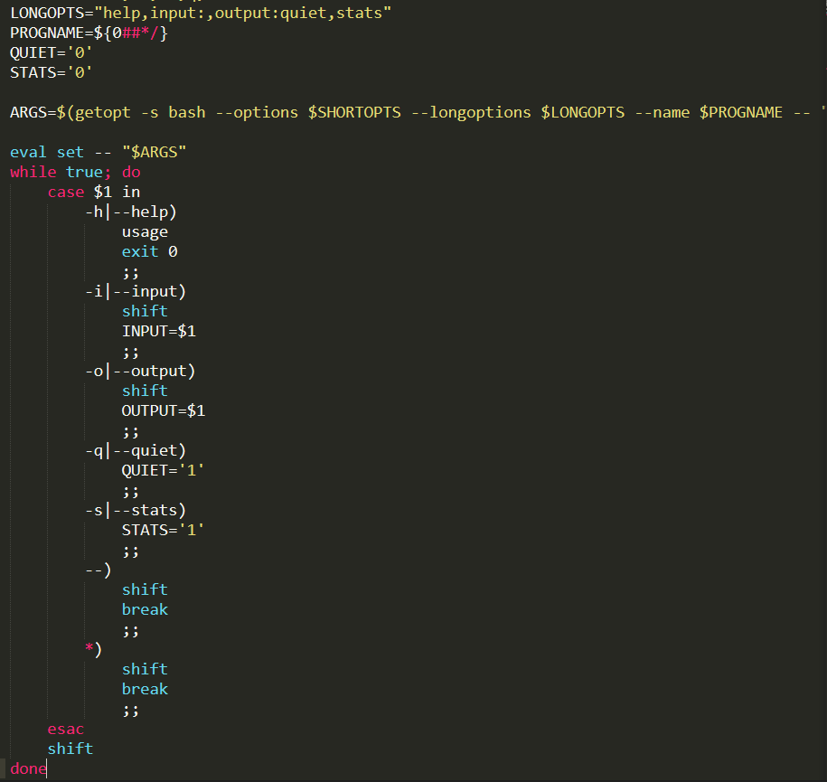
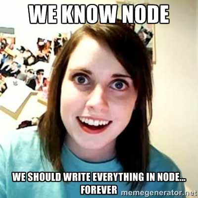
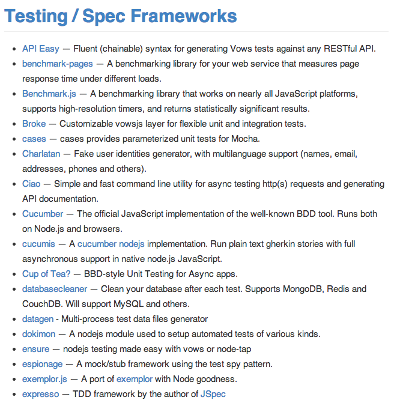

<!DOCTYPE html>
<html lang="en"></html>
<head>
  <meta charset="utf-8">
  <title>revealmd.js</title>
  <meta name="description" content="A framework for easily creating beautiful presentations using HTML">
  <meta name="author" content="Josh Finnie &lt;josh@jfin.us&gt;">
  <meta name="apple-mobile-web-app-capable" content="yes">
  <meta name="apple-mobile-web-app-status-bar-style" content="black-translucent">
  <meta name="viewport" content="width=device-width, initial-scale=1.0, maximum-scale=1.0, user-scalable=no">
  <link rel="stylesheet" href="assets/reveal.js/css/reveal.min.css">
  <link id="theme" rel="stylesheet" href="assets/reveal.js/css/theme/moon.css">
  <!-- For syntax highlighting -->
  <link rel="stylesheet" href="assets/reveal.js/lib/css/zenburn.css">
  <!--if lt IE 9script(src='assets/reveal.js/lib/js/html5shiv.js')
  -->
</head>
<body>
  <div class="reveal">
    <div class="slides">
      <section>
<h1 id="building-a-node-js-command-line-app">Building a Node.js Command Line App</h1>
<p>Josh Finnie</p>
</section>
<section>
<h1 id="who-am-i-">Who Am I?</h1>
<ul>
<li>Josh Finnie</li>
<li>Software Maven @ <a href="http://trackmaven.com">TrackMaven</a></li>
<li>Purveyor of @NodeDC Hack Nights / Office Hours</li>
</ul>
</section>
<section>
<h1 id="why-a-node-js-cla-">Why a Node.js CLA?</h1>
<ul>
<li>I tried to write Bash</li>
<li>I was terrible at it</li>
<li>Then this happened:</li>
</ul>
</section>
<section>
<p></p>
<h6 id="-source-optimizing-with-bash-http-hugogiraudel-com-2013-07-29-optimizing-with-bash-"><a href="http://hugogiraudel.com/2013/07/29/optimizing-with-bash/">source: Optimizing with Bash!</a></h6>
</section>
<section>
<p></p>
</section>
<section>
<h1 id="and">And</h1>
<p></p>
</section>
<section>
<h1 id="so-how-">So how?</h1>
<ul>
<li>Write in node.js</li>
<li>...</li>
<li>Profit?</li>
</ul>
</section>
<section>
<h1 id="setup">Setup</h1>
<ul>
<li>Tell the app you&#39;re using node.js</li>
</ul>
<pre><code>#!/usr/bin/env node

console.log(&quot;Hello World!&quot;)
</code></pre><ul>
<li>Make it executable</li>
</ul>
<pre><code>$ chmod u+x myCLA
</code></pre><ul>
<li>Run it</li>
</ul>
<pre><code>$ ./myCLA
Hello World!
</code></pre></section>
<section>
<h1 id="example-1">Example 1</h1>
<p>ex1</p>
<pre><code>#!/usr/bin/env node

var userArgs = process.argv.slice(2);
var name = userArgs[0];

console.log(&quot;Hello &quot; + name + &quot;!&quot;);
</code></pre><p>output</p>
<pre><code>$ ./ex1 Josh
Hello Josh!
</code></pre></section>
<section>
<h1 id="running-a-cla">Running a CLA</h1>
<ul>
<li>Run using the <code>node</code> interpreter:</li>
</ul>
<pre><code>$ node bin/myCLA
</code></pre><ul>
<li>Making it executible:</li>
</ul>
<pre><code>$ ./bin/myCLA
</code></pre><ul>
<li>Install globally:</li>
</ul>
<pre><code>$ myCLA
</code></pre></section>
<section>
<h1 id="making-this-better">Making this better</h1>
<ul>
<li>Let&#39;s find a library to handle arg parsing for us...<ul>
<li><a href="https://github.com/visionmedia/commander.js">Commander.js</a></li>
<li><a href="https://github.com/substack/node-optimist">Optimist</a> (Being replaced with <a href="https://github.com/substack/minimist">Minimist</a>)</li>
<li><a href="https://github.com/npm/nopt">Nopt</a></li>
</ul>
</li>
<li>Since this is not pretty:</li>
</ul>
<pre><code>var userArgs = process.argv.slice(2);
var name = userArgs[0];
</code></pre></section>
<section>
<h1 id="example-2">Example 2</h1>
<h2 id="using-optimist">Using Optimist</h2>
<p>(Pushfile as an example...)</p>
<pre><code>#!/usr/bin/env node

var argv = optimist
  .usage(&#39;Pushes file to S3 using a shortened name.\n\nVersion: &#39; + version + &#39;\n\nUsage: $0 [options] &lt;file&gt;&#39;)
  .boolean(&#39;u&#39;)
  .alias(&#39;u&#39;, &#39;unique&#39;)
  .describe(&#39;u&#39;, &#39;Gives a unique, timestamped hash for uploaded filename.&#39;)
  .boolean(&#39;c&#39;)
  .alias(&#39;c&#39;, &#39;configure&#39;)
  .describe(&#39;c&#39;, &#39;Create a configuration file.&#39;)
  .string(&#39;h&#39;)
  .alias(&#39;h&#39;, &#39;help&#39;)
  .describe(&#39;h&#39;, &#39;Print usage info&#39;)
  .argv;
</code></pre></section>
<section>
<h1 id="ouput-of-optimist">Ouput of Optimist</h1>
<pre><code>╭ ▶ joshfinnie@trackmaven  ~
╰ ▶ $ pushfile -h
Pushes file to S3 using a shortened name.

Version: 0.1.3

Usage: /usr/local/bin/pushfile [options] &lt;file&gt;

Options:
  -u, --unique     Gives a unique, timestamped hash for uploaded filename.
  -c, --configure  Create a configuration file.
  -h, --help       Print usage info
</code></pre></section>
<section>
<h1 id="testing-your-cla">Testing your CLA</h1>
<ul>
<li>It&#39;s <code>Node.js</code>!</li>
</ul>
<p></p>
<p>(<a href="https://github.com/joyent/node/wiki/modules#testing">source</a>)</p>
</section>
<section>
<h1 id="releasing-your-cla">Releasing your CLA</h1>
<ul>
<li>Update your <code>package.json</code><ul>
<li>Set <code>preferGlobal</code> to <code>true</code></li>
<li>Set location of executible using <code>bin</code></li>
</ul>
</li>
</ul>
<pre><code>    &quot;preferGlobal&quot;: true,
    &quot;bin&quot;: {&quot;app&quot;: &quot;bin/app&quot;}
</code></pre></section>
<section>
<h1 id="setting-up-npm">Setting up NPM</h1>
<ul>
<li>Create a user on <a href="https://www.npmjs.org/signup">NPM</a></li>
<li>Run <code>npm adduser</code> in your terminal</li>
</ul>
<pre><code>$ npm adduser
Username: joshfinnie
Password:
Email: (this IS public) josh@jfin.us
npm http PUT https://registry.npmjs.org/-/user/org.couchdb.user:joshfinnie
npm http 409 https://registry.npmjs.org/-/user/org.couchdb.user:joshfinnie
npm http GET https://registry.npmjs.org/-/user/org.couchdb.user:joshfinnie?write=true
npm http 200 https://registry.npmjs.org/-/user/org.couchdb.user:joshfinnie?write=true
npm http PUT https://registry.npmjs.org/-/user/org.couchdb.user:joshfinnie/-rev/3-5cbc34433444234f5e75d385d5ffe960
npm http 201 https://registry.npmjs.org/-/user/org.couchdb.user:joshfinnie/-rev/3-5cbc34433444234f5e75d385d5ffe960
</code></pre></section>
<section>
<h1 id="publish-to-npm">Publish to NPM</h1>
<ul>
<li>cd into your CLA directory</li>
<li>Run the following command:<pre><code>npm publish .
</code></pre></li>
<li>Yes, it is that easy...</li>
</ul>
</section>
<section>
<h1 id="conclusion">Conclusion</h1>
<p>That&#39;s a super high-level talk about writing a command-line application in Node.js</p>
<ul>
<li>Remember:<ul>
<li>It&#39;s just Node.js</li>
<li>Arg parsing is a pain</li>
<li>Test your app</li>
<li>Publish often!</li>
</ul>
</li>
</ul>
</section>
<section>
<h1 id="connect-with-me-">Connect with me!</h1>
<ul>
<li><a href="https://twitter.com/joshfinnie">@joshfinnie</a> on Twitter</li>
<li><a href="https://github.com/joshfinnie">joshfinnie</a> on Github</li>
<li><a href="http://www.joshfinnie.com">My Website</a><ul>
<li><a href="http://www.joshfinnie.com/talks/05-22-2014-nodedc-command-line-apps-in-node/">Tonight&#39;s slides</a></li>
</ul>
</li>
</ul>
</section>
<section>
<h1 id="we-re-hiring">We&#39;re Hiring</h1>
<ul>
<li>Come work for <a href="http://trackmaven.com">TrackMaven</a></li>
<li>Angular.js &amp; Django</li>
<li>Corgis (<a href="https://twitter.com/MavenTheCorgi">@MavenTheCorgi</a>)</li>
</ul>
<p></p>
</section>
<section>
<h1 id="questions">Questions</h1>
<h1 id="-">?</h1>

      </section>
    </div>
  </div>
  <script src="assets/reveal.js/lib/js/head.min.js"></script>
  <script src="assets/reveal.js/js/reveal.min.js"></script>
  <script src="js/reveal-initialize.js"></script>
</body>